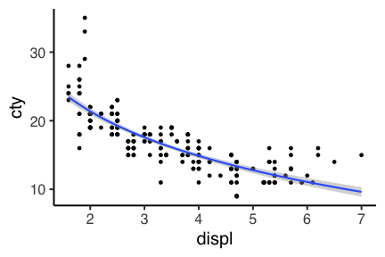

Rにやらせて楽しよう — データの可視化と下ごしらえ (DRAFT)
総研大 先導科学研究科
(SOKENDAI, The Graduate University for Advanced Studies)
(SOKENDAI, The Graduate University for Advanced Studies)
2018-05-18
名古屋大学 アドバンス生命理学特論 IGER Seminar
データ可視化の重要性
- 研究成果を魅力的に伝える
- 自分自身が状況を把握 → 正しい解析・新しい発見

きれいなグラフを簡単に合理的に描きたい。
同じデータでも見せ方で印象が違う
TODO
このパートの内容: R+ggplot2で作図
- ggplot2とは
- 基本的な使い方
- いろんな種類のプロットを見てみる
- 多変量データの俯瞰も楽勝
- 微調整のやり方
ggplot2とは

- tidyverseパッケージ群のひとつ
- 一貫性のある文法で、いろんなグラフを描ける
- “The Grammer of Graphics” という体系に基づく設計

Rの普通のplotとは根本的に違う
いきなりggplot2から使い始めても大丈夫。
基本的な使い方: 要素を + していく
ggplot()にデータを渡す。geom_*()で点や線のレイヤーを重ねる。theme_*()で軸や背景の見た目を変更。
ggplot(data = mpg)
# geom_point(mapping = aes(x = displ, y = hwy))
# theme_classic(base_size = 20, base_family = "Helvetica")基本的な使い方: 要素を + していく
ggplot()にデータを渡す。geom_*()で点や線のレイヤーを重ねる。theme_*()で軸や背景の見た目を変更。
ggplot(data = mpg) +
geom_point(mapping = aes(x = displ, y = hwy))
# theme_classic(base_size = 20, base_family = "Helvetica")
基本的な使い方: 要素を + していく
ggplot()にデータを渡す。geom_*()で点や線のレイヤーを重ねる。theme_*()で軸や背景の見た目を変更。
ggplot(data = mpg) +
geom_point(mapping = aes(x = displ, y = hwy)) +
theme_classic(base_size = 20, base_family = "Helvetica")
途中経過を取っておける
p0 = ggplot(data = mpg)
p1 = p0 + geom_point(mapping = aes(x = displ, y = hwy))
p2 = p1 + theme_classic(base_size = 20, base_family = "Helvetica")
print(p2)
データは1つのdata.frameにまとめておく
X軸やY軸になるものがそれぞれ縦1列。横1行が1データ点。
車の燃費に関する多変量データの例 mpg:
print(mpg) manufacturer model displ year cyl trans drv cty hwy fl class
<char> <char> <num> <int> <int> <char> <char> <int> <int> <char> <char>
1: audi a4 1.8 1999 4 auto(l5) f 18 29 p compact
2: audi a4 1.8 1999 4 manual(m5) f 21 29 p compact
3: audi a4 2.0 2008 4 manual(m6) f 20 31 p compact
4: audi a4 2.0 2008 4 auto(av) f 21 30 p compact
---
231: volkswagen passat 2.0 2008 4 manual(m6) f 21 29 p midsize
232: volkswagen passat 2.8 1999 6 auto(l5) f 16 26 p midsize
233: volkswagen passat 2.8 1999 6 manual(m5) f 18 26 p midsize
234: volkswagen passat 3.6 2008 6 auto(s6) f 17 26 p midsize
排気量displと燃費hwy以外の列も図に反映させたい…!
Aesthetic mapping でデータ列と見せ方を紐付け
aes() の中で指定する。
p0 + geom_point(mapping = aes(x = displ, y = hwy, size = cyl,
colour = class, shape = drv))
データによらず一律で見せ方を変える
aes() の外で指定する。
p0 + geom_point(mapping = aes(x = displ, y = hwy),
size = 5, colour = "darkorange", alpha = 0.5)
がんばって調整すると

Facetで切り分けて表示 (1変数)
p1 + facet_wrap(~ class, ncol = 4L)
Facetで切り分けて表示 (2変数)
p1 + facet_grid(cyl ~ class)
多変量データの俯瞰に便利

グラフの種類 geom_***() 関数
- 散布図
gp + geom_point(size=2, alpha=0.3)gp + geom_text(aes(label=foo))- 折れ線グラフ
gp + geom_path(size=2, linetype="dashed")データ順に結ぶgp + geom_line()x軸上の順で結ぶgp + geom_step()階段状に結ぶ- 面グラフ
gp + geom_ribbon()— yminからymaxの面gp + geom_area()— 0からyの面- ヒストグラム、密度曲線
gp + geom_histogram()— 棒グラフ(連続値をstat_bin()で区切って)gp + geom_bar()— 棒グラフ(離散値をstat_count()で数えて)gp + geom_freqpoly()— 折れ線gp + geom_density()— 密度推定されたスムーズな線gp + geom_bin2d()— 二次元ヒストグラムgp + geom_hex()— 六角形版二次元ヒストグラム- 棒グラフ
gp + geom_col()- 箱ひげ図
gp + geom_boxplot()gp + geom_violin()- ヒートマップ
gp + geom_tile(aes(fill=z))gp + geom_raster(aes(fill=z))— 各タイルの大きさを揃える制約のため高速- エラーバー
gp + geom_errorbar(aes(ymax = y + se, ymin = y - se), width = 0.1)gp + geom_linerange(...)gp + geom_pointrange(...)- 切片と傾きで直線を描く
gp + geom_abline(intercept=3, slope=5)gp + geom_hline(yintercept=7) + geom_vline(xintercept=11)- 始点と終点で曲線や矢印を描く
gp + geom_curve(aes(x, y, xend, yend), curvature = -0.2)gp + geom_segment(aes(x, y, xend, yend), arrow=arrow())
座標軸の調整
themeで全体の雰囲気を調整
論文のFigureみたいに並べる
cowplot patchwork gridExtra
ggsave 図を保存
Exportボタンみたいなとこをクリックしても保存できるけど、 ここもプログラムとして書く！
参考
- 発展的な内容
gridを習得するとグラフの中にグラフを入れたり、 表形式のデータを図としてグラフと並べたりもできる。 @yutannihilationさんの記事 とかを参考に。